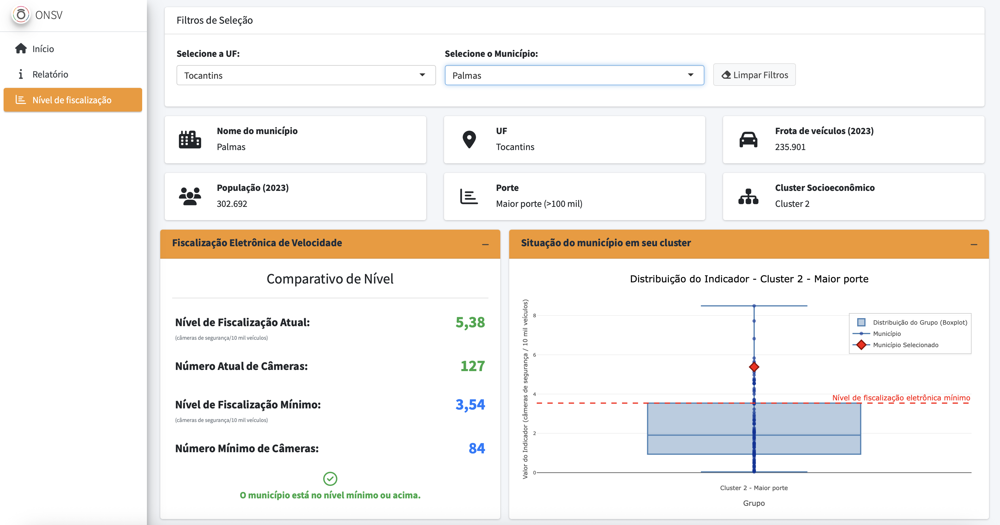
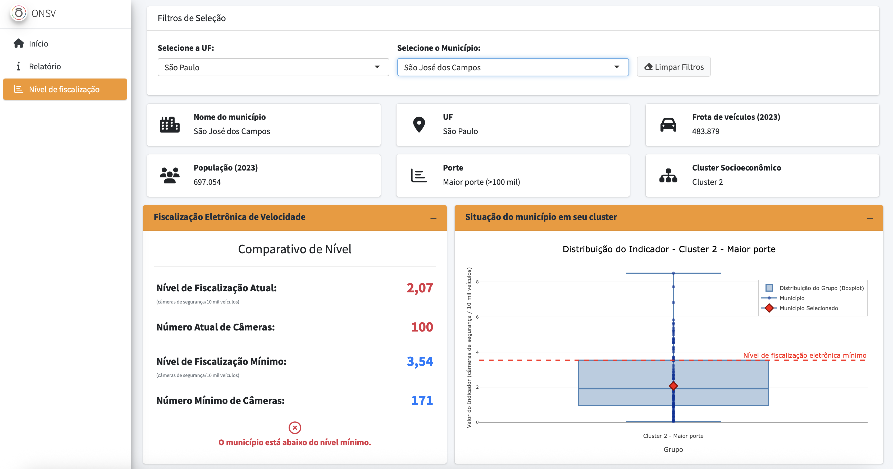

3 Antecedentes – Estudos anteriores desenvolvidos pelo Observatório
A partir de dados sobre fiscalização eletrônica de velocidade extraídos dos relatórios de verificação do Instituto Nacional de Metrologia, Qualidade e Tecnologia (INMETRO)1, disponíveis por meio do Portal de Serviços do Inmetro nos Estados - PSIE e do Portal de Dados Abertos do Governo Federal (BRASIL 2024), o Observatório Nacional de Segurança Viária juntamente com o Centro de Estudos em Planejamento e Políticas Urbanas da Universidade Federal do Paraná desenvolveram o estudo “Indicadores de desempenho da segurança viária sobre velocidade no Brasil”. No estudo, foram apresentados 12 indicadores relacionados à fiscalização eletrônica de velocidade considerando tanto dados gerais agregados nacionalmente, por unidade da federação e por município. O termo “câmera de segurança” foi introduzido para se referir à fiscalização eletrônica de velocidade, chamando a atenção para o caráter de segurança desses dispositivos. Entre os principais resultados destacam-se: (a) rankings dos indicadores de fiscalização eletrônica de velocidade segundo unidade da federação; (b) correlação estatisticamente significativa entre o nível de fiscalização eletrônica e o nível de obediência à fiscalização eletrônica de velocidade, ou seja, onde é maior o nível de fiscalização é menor a quantidade de infrações por câmera de segurança; (d) rankings dos indicadores de fiscalização eletrônica de velocidade segundo município, incluindo as capitais (ONSV e UFPR 2025).
Embora indicadores como número de câmeras de segurança por frota de veículos possam ser úteis para comparar a cobertura da fiscalização eletrônica entre diferentes locais, a literatura não aponta um valor ótimo universal para esses indicadores. Buscando preencher esta lacuna, foi desenvolvido um estudo com o objetivo estabelecer uma referência de qual seria o indicador de fiscalização eletrônica de velocidade mínimo para cada município brasileiro baseado no nível socioeconômico deste município (ONSV 2025), com base na ideia de que os indicadores socioeconômicos manifestam o potencial de mobilização dos municípios para o desenvolvimento de ações de segurança viária em seus territórios, incluindo a fiscalização eletrônica de velocidade.
Os municípios foram agregados segundo os clusters socioeconômicos estabelecidos no estudo “O Plano Nacional de Redução Mortes e Lesões no Trânsito: O Papel dos Municípios” (ONSV e UFPR 2023) por meio da aplicação da técnica de Análise de Componentes Principais (PCA). Os indicadores socioeconômicos utilizados no estudo foram: quantidade de veículos por mil habitantes (taxa de motorização), o Produto Interno Bruto (PIB) per capita e o Índice de Desenvolvimento Humano Municipal – IDHM (que considera os níveis de educação, saúde e renda dos municípios). Esses indicadores socioeconômicos representam o potencial de mobilização de cada município, pois quanto melhor o nível de desenvolvimento econômico e social, mais apto está um local para investir e engajar-se em ações de redução do risco e severidade dos sinistros de trânsito (ONSV e UFPR 2023). Este processo resultou em 3 clusters socioeconômicos por porte de município (menor, médio e maior), ou seja, resultando em 9 clusters no total.
A fim de adotar como referência os melhores níveis de fiscalização eletrônica de velocidade em cada cluster, o valor correspondente ao terceiro quartil foi utilizado como nível de fiscalização eletrônica de velocidade mínimo, ou seja, o valor acima do qual apenas 25% dos municípios do cluster encontram-se. Para facilitar a visualização dos dados, foi desenvolvido um painel para consulta sobre o nível de fiscalização eletrônica de velocidade de cada município em comparação ao nível mínimo para seu respectivo cluster (ONSV 2025). A Figura 3.1 e Figura 3.2 contêm exemplos de consultas realizadas no painel para dois municípios, um acima do nível mínimo de fiscalização eletrônica e outro abaixo.

